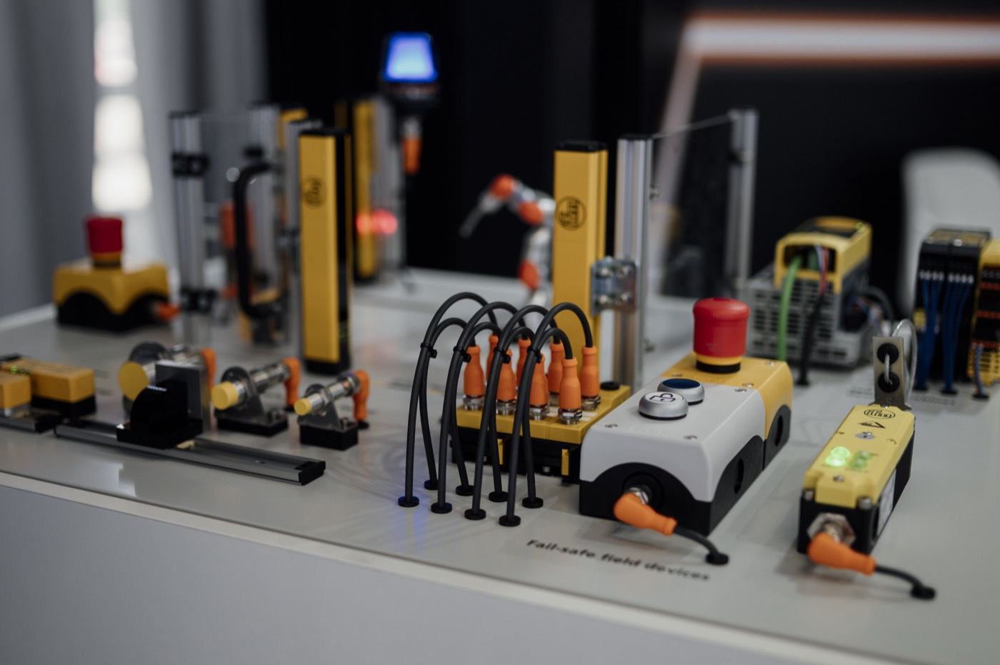
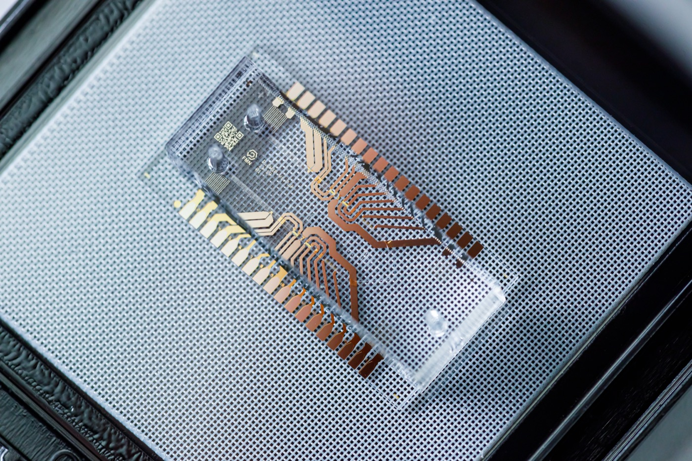
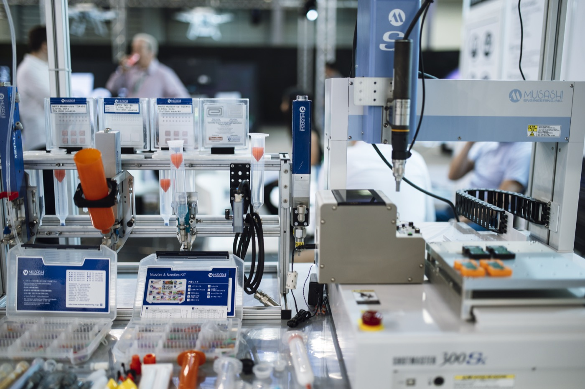
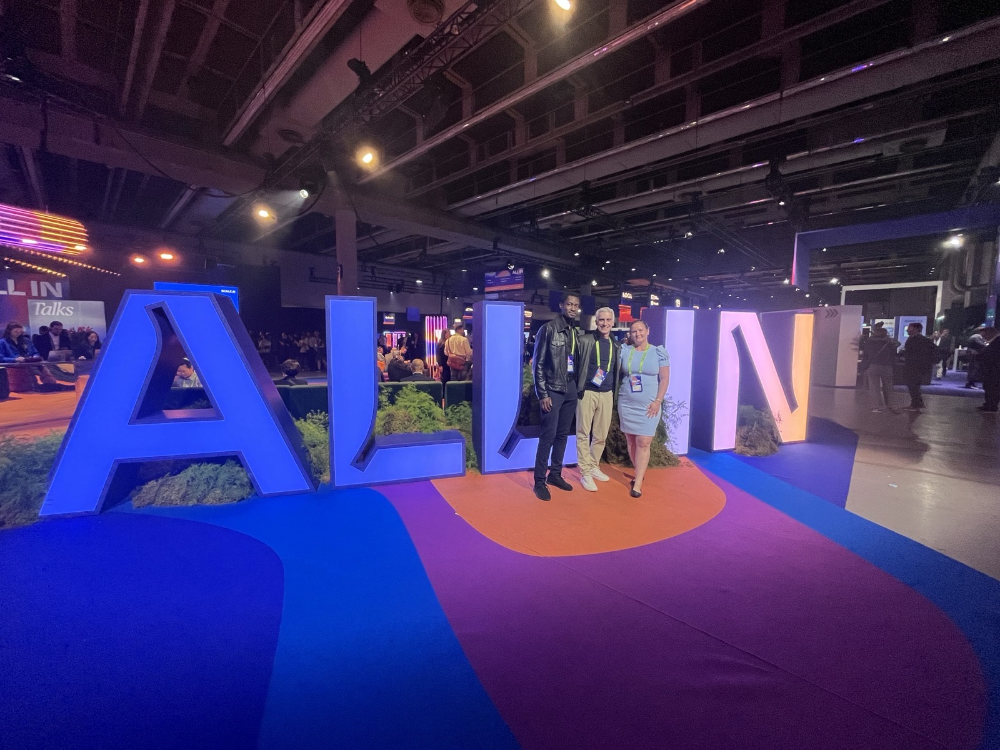

Connected machines
Machine data collection, fault detection and predictive maintenance for OEMs and the plants that run their equipment.
Applied AI · Québec City
I help manufacturers, healthcare organizations and growing businesses put AI to work on real operating problems, from machine data to a fix that someone on shift trusts.
Field log
Operator, maintenance, machine builder, industrial AI developer, and regulated software. Each seat shows a different reason AI projects succeed or stall.
Work

Machine data collection, fault detection and predictive maintenance for OEMs and the plants that run their equipment.

A decade of healthcare software, certified to strict North American standards, with privacy built in and data kept in Canada.

From operating and maintaining lines to designing a collator machine: what automation really costs, and what operators need to trust it.
Approach
Start from one operating decision to improve: a fault, a forecast, a quality call. Not from a model.
Is there enough history, and is it the right data? Most projects stall here, so we look first.
Ship the smallest version that works on real data, then test it with the people who will use it.
Who uses it, on which shift, and what a wrong answer costs. That path is part of the deliverable.
Services
Plants don't adopt AI. They adopt a fix for an operating problem that someone on the floor trusts.
Albert Bitreyeson

In the field
At ALL IN in Montréal, Canada's flagship AI event, I met industry leaders to see how AI is actually being adopted, and I bring those conversations back into the work.
Contact
Tell me about it. I reply within two business days, in French or English.